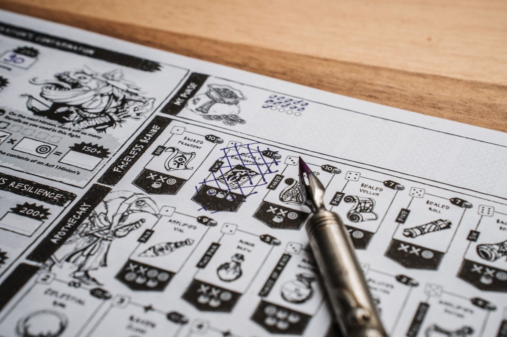
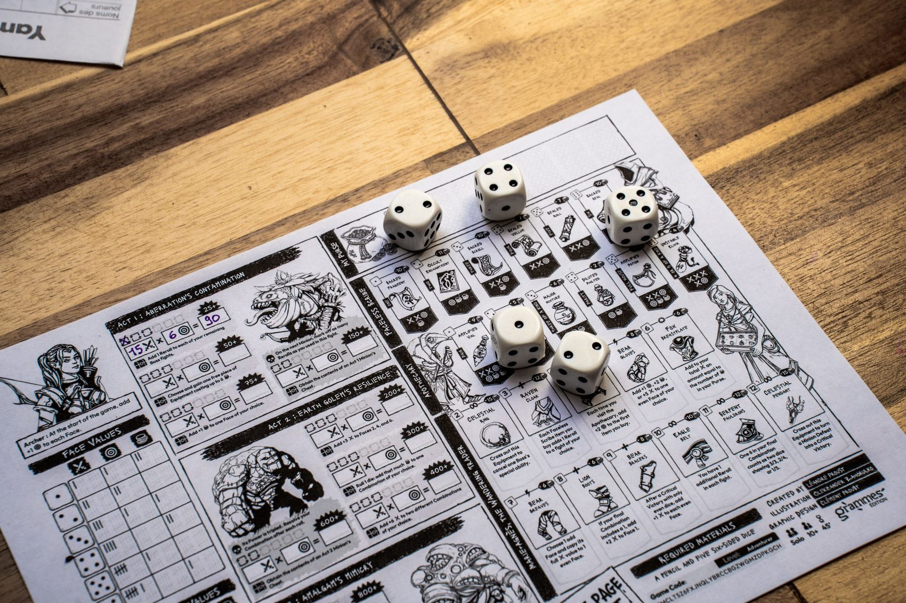

I / Przygoda
Scenariusze RPG
Jednostrzał lub rozbudowana przygoda z konfliktem, bohaterami niezależnymi i sytuacjami, które mogą zmieniać się pod wpływem decyzji drużyny.
FabułaNPCMożliwe ścieżki
Autorskie historie · Projekty narracyjne
Od pojedynczej przygody po historię całego świata. Piszę scenariusze RPG, tworzę bohaterów i projektuję opowieści, które pozostawiają przestrzeń na wybory graczy.
Dla graczy, Mistrzów Gry i twórców szukających wsparcia przy pisaniu.

01 Zakres usług
Nie musisz mieć gotowego scenariusza ani rozpisanego świata. Możemy zacząć od ogólnego pomysłu i dopiero wspólnie określić formę materiału.
Jednostrzał lub rozbudowana przygoda z konfliktem, bohaterami niezależnymi i sytuacjami, które mogą zmieniać się pod wpływem decyzji drużyny.
Backstory z motywacjami, relacjami i haczykami fabularnymi, które Mistrz Gry może wykorzystać w opowieści. Nie tylko życiorys, ale punkt wyjścia do gry.
Historia miejsca, mitologia, frakcje, kultury i powiązania między nimi. Spójne tło, które daje uczestnikom opowieści coś więcej niż zbiór faktów.
Wielosesyjna struktura przygód, główny konflikt, wątki poboczne i punkty zwrotne. Projekt, który pozostaje otwarty na wybory i improwizację.
Chcesz połączyć kilka obszarów, np. scenariusz z historią świata? Zakres każdego zamówienia ustalam indywidualnie.

02 Moje podejście
W scenariuszu najważniejsze nie jest dla mnie przewidzenie każdego ruchu graczy. Wolę przygotować przekonujących bohaterów, konflikty i świat, który będzie miał własną logikę.
Dlatego projektuję materiały tak, by pomagały prowadzącemu reagować na działania drużyny, a nie wymuszały jedną kolejność scen. To samo podejście stosuję do historii postaci i tworzenia lore.
„Scenariusz ma otwierać możliwości, nie zamykać je w jednym zakończeniu.”Poznaj moją filozofię prowadzenia
03 Od pomysłu do materiału
Prosty proces, którego szczegóły dostosowujemy do rodzaju projektu.
Wystarczy zarys fabuły, pomysł na postać, system RPG albo klimat, który chcesz uzyskać. Nie wymagam gotowego briefu.
Wspólnie określamy, co ma powstać, do czego materiał będzie używany oraz termin, koszt i zakres poprawek.
Przygotowuję uzgodniony materiał, uwzględniając wcześniej ustalony sposób zbierania uwag i wprowadzania poprawek.
Przekazuję materiał w uzgodnionej formie. Dalsze wykorzystanie i ewentualną publikację ustalamy zgodnie z charakterem zamówienia.
04 Własne projekty
Piszę własne przygody RPG. Pierwszy scenariusz został już opublikowany, a kolejne materiały oraz artykuły o projektowaniu narracji znajdziesz w zakładce „Twórczość”.
Wydana przygoda
Zobacz publikację05 Zanim zaczniemy
Każda historia jest inna, dlatego nie podaję jednej ceny dla wszystkich projektów. Wycena zależy od zakresu i złożoności pracy.
Ustalamy ją przed rozpoczęciem pracy, razem z terminem realizacji i zakresem materiału.
Poprawki mieszczące się w uzgodnionym zakresie są częścią współpracy. Ich szczegóły ustalamy wcześniej.
Jeśli materiał ma być dalej publikowany lub rozpowszechniany, uzgadniamy to osobno.